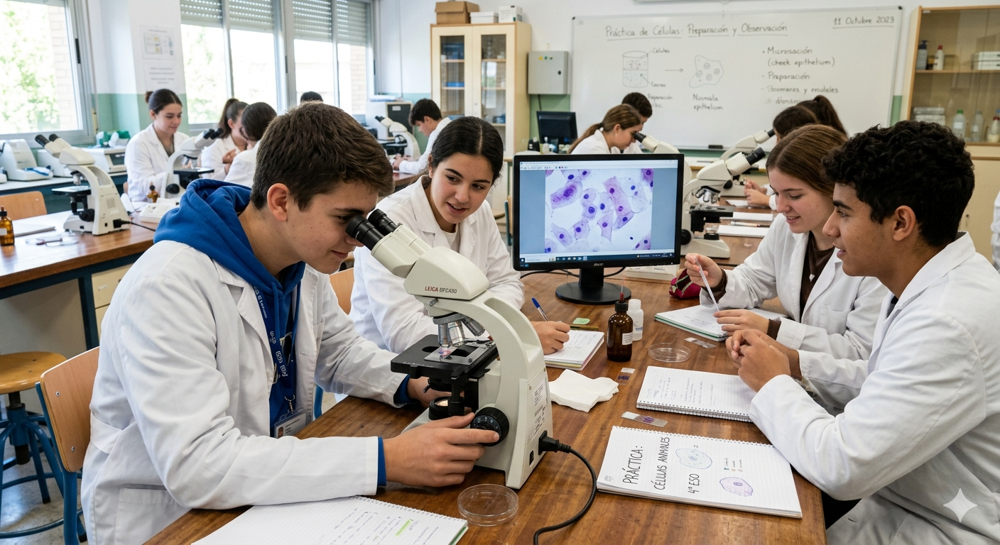

Actividad 3

La actividad 3 consiste en realizar una práctica de laboratorio para visualizar células eucariotas animales procedentes de la mucosa oral y células eucariotas vegetales de la epidermis de cebolla, con objetivo de establecer un aprendizaje competencial, de acuerdo a la normativa vigente.
Se llevará a cabo en parejas. (Agrupamiento).
Tiempo: 1 sesión de 60 minutos, aproximadamente.
Herramientas a emplear: Guion de prácticas que el alumnado tiene disponible en Google Classroom y en Padlet, microscopio óptico, cuaderno de clase/portfolio, material de laboratorio y útiles de escritura.
Ubicación: la práctica científica, se llevará a cabo en el laboratorio del centro.